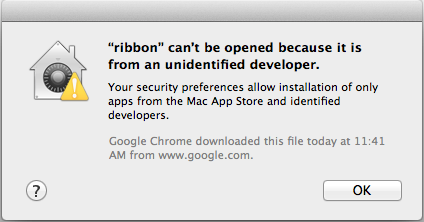
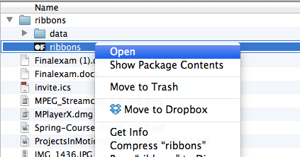

Mac OSX 10.6 ou superior
Oi! :)
Obrigado por baixar e testar Ribbons! Esse app ainda está em teste, então você pode acabar encontrando bugs pelo caminho... Seria ótimo se você updesse reportá-los pra mim através do email gianordoligabriel@gmail.com. Não deixe de enviar também feedback sobre outras áreas que podem melhorar, como:
Abs,
Gabriel
Simplesmente execute o arquivo ribbons, que veio junto nesse zip. Talvez você veja esse alerta:

Desde o Mac OSX 10.8 (Mountain Lion), aplicativos que não foram baixados pela App Store são bloqueados por default. Para executar o app, pressione Control, clique nele e selecione Open:

Mais um alerta deve aparecer. Simplesmente clique em Open.
Tudo isso que eu disse pode ser confirmado pela própria Apple aqui!
Essas opções alteram a função do mouse e o modo de visualização do desenho. O aplicativo inicia com DRAW como default. Exceto por esse modo, todos os outros alteram a visualização para 3D.
DRAW: Desenho livre. Formas são exibidas como vetor simples, sem efeitos 3D.
CAMERA: Muda o modo de visualização para 3D. As funções de mouse habilitadas nesse modo são:
REPULSION: Faz o mouse repelir as formas desenhadas. A área e força de repulsão podem ser controladas com as opções FORCE RADIUS e FORCE STRENGTH.
ATTRACTION: Faz o mouse atrair as formas desenhadas. A área e força de repulsão podem ser controladas com as opções FORCE RADIUS e FORCE STRENGTH.
WIND: Faz o mouse atrair as formas desenhadas. A área e força de repulsão podem ser controladas com as opções FORCE RADIUS e FORCE STRENGTH.
APPLY SMOOTHING: Suaviza as curvas do desenho. Você pode desfazer essa ação usando o botão RESET SHAPES.
RESET SHAPES: Retorna as formas para o desenho original, desde que elas não tenham sido apagadas com a ERASE SHAPES. Desfaz tanto ações de transformação (APPLY SMOOTHING), quanto efeitos 3D.
ERASE SHAPES: Apaga todas as formas desenhadas. Essa ação não pode ser desfeita.
COLOR: Altera a mistura de RED, GREEN e BLUE das formas.
As alterações desse menu só são visíveis quando as formas estão sendo visualizadas em 3D.
THICKNESS: Altera a largura da fita.
DEPTH: Altera a profundidade (z) dos pontos da fita, na sequência em que foram desenhados. Pontos desenhados no fim de uma forma parecerão mais próximos que pontos desenhados no começo.
OSCILLATE: Aciona a animação de oscilação das formas.
PLAYBACK: Controla o quanto do desenho é exibido, desenhando a forma ponto a ponto.
TAKE SNAPSHOT: Salva a visualização atual como uma imagem, com fundo transparente e em formato tif. A imagem é salva na pasta data, no mesmo diretório do app. Se a pasta tiver sido deletada, uma nova será criada.
RECORD SEQUENCE: Salva a visualização atual como uma sequência de imagens, com fundo transparente e em formato tif. Essa opção pode ser utilizada em conjunto com os modos 3D ou PLAYBACK para criar uma animação, por exemplo. A sequência de imagens é salva na pasta data, no mesmo diretório do app. Se a pasta tiver sido deletada, uma nova será criada.
Essas opções são habilitadas apenas nos modos REPULSION e ATRACTION.
FORCE RADIUS: Altera a área de influência da força aplicada.
FORCE STRENGTH: Altera a intensidade da força aplicada.
Essas opções não são visíveis no modo DRAW.
AMPLITUDE: Altera a amplitude da onda de oscilação.
FREQUENCY: Altera a frequência de oscilação.
LENGTH: Altera o comprimento de onda da oscilação.